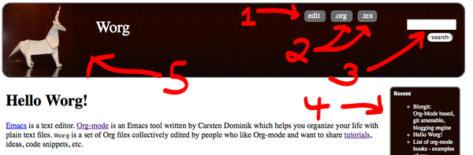
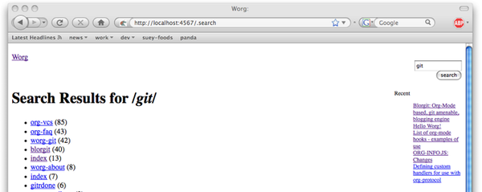
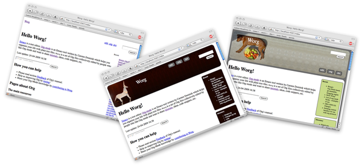
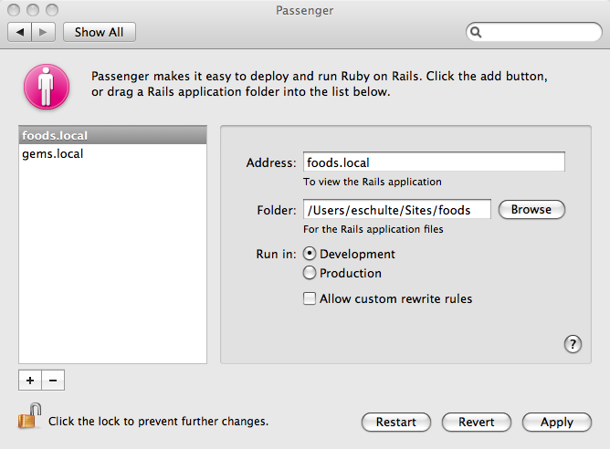
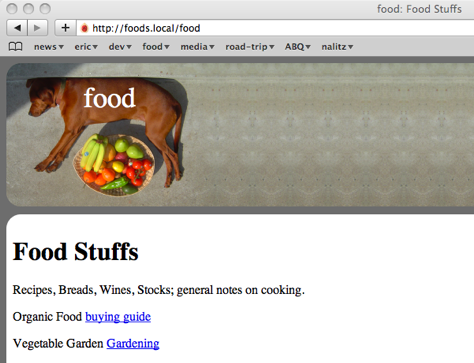

Blorgit: Org-Mode based, git amenable, blogging engine
Table of Contents
Introduction
Blorgit is a blogging engine which uses Org-Mode for markup, runs on the Sinatra mini web framework, and is amenable to posting and maintenance through git. With the addition of a little Ruby blorgit creates interactive web pages with Org-Mode.
Features

- In Browser Editing Org-mode files can be edited through the
browser. Upon submitting an edit the original org-mode file is
overwritten and the web-page is re-exported. Edits can be turned
on off or with the
editableconfiguration option and can be password protected by setting theauthconfiguration option - Export to org-mode and LaTeX formats The raw Org-mode source, and LaTeX exports of all pages can be downloaded.
- Search The search bar compares your search terms as a perl-style regular expression (in most cases working just like a simple term search) against the org-mode source of each page returning a ranked list. 
- Sidebar with Recent changes and Directory Listing The top
Nrecently edited pages, and/or directory listings can optionally be presented in a sidebar. These are controlled through therecentanddir_listconfiguration options. - Themes The blorgit_themes git repository holds prepackaged
themes for blorgit. These can be applied to your installation
using the supplied rake commands. For a list of available themes
run
rake themesfrom the root of your blorgit installation. Please share any new themes you might create.  - Comments in org-mode files Pages can optionally be opened for
comments, all comments will be stored in a special
* COMMENT Commentsoutline header appended to the end of the org file. - Git Synchronization By setting the
git_commitconfiguration option totrueblorgit can be made to automatically commit and push to a git repository after every comment or edit of an org-mode file.
Getting Started (installation and use)
Install Ruby
If you don’t already have ruby installed on your system then you will need to install Ruby and Ruby Gems (Ruby’s package managment system).* Be sure to install Ruby 1.8 (should be default option) not Ruby 1.9.
Install the Required Gems
sudo gem install rake sinatra haml sass activesupportInstall blorgit
git clone git://github.com/eschulte/blorgit.gitUpdate the submodules of blorgit to provide file based persistence (active_file), org-mode interaction (acts_as_org), and themes (blorgit_themes).
cd blorgit git submodule init git submodule update
Create Blogs Directory
Create a blogs directory (in
~/blogs/) with the default configuration (To change the location of the blogs directory editblorgit.ymlin this directory). Apply the default minimal theme (for a list of available themes runrake themes). The Emacs Server must have been started at least once as described under point 5.rake new rake themes:default
- Start Servers
Emacs Server
Starting your emacs server allows Emacs to act as a server which can then export org-mode file to html. To do this we simply need to load the
org-interaction.elfile inacts_as_org. You can do this by executing the following in emacsM-x load-file /path/to/blorgit/backend/acts_as_org/elisp/org-interaction.el
or with the following shell command
emacs -l backend/acts_as_org/elisp/org-interaction.el
Web Server
Start your sinatra web server with the following command
ruby blorgit.rb
View in Browser
Additional Information
Common Tasks
Ruby has its own make tool called Rake. For a list of the blorgit
rake commands run rake -T from the root of your blorgit
installation. At the time of writing the available rake tasks are…
$ rake -T (in /Users/eschulte/src/blorgit) rake exported:delete # delete all temporary exported files rake exported:list # list all temporary exported files rake index # drop a minimal index page into /Users/eschulte/Site... rake info # return configuration information about the current ... rake new # create a new blorgit instance rake themes # list the available themes rake themes:default # a default theme, should serve as a good starting point rake themes:food # a food theme for my recipes rake themes:org # an org-mode theme featuring the folding unicorn
Changing Configuration Options
The configuration is controlled through a YAML file located at
blorgit.yml in the base of your blorgit installation. Configuration
variables can be used to control the title, index page,
stylesheet, the number of recent entries and directory_listings
shown in the sidebar, automatic synchronization with a git
repository, commentability, editability and optional password
protection for posting edits, . The default configuration is…
---
title: Blorgit
index: index
style: stylesheet.css
recent: 5
dir_list: false
git_commit: false
commentable: true
editable: false
auth:
- admin
- password
Directory Local Configuration
It is possible to specify configuration options for each individual
directories of your blorgit site. To do so write the configuration
options you wish to specify to a file named .blorgit.yml. These
options will be used when displaying files in the same directory as
the .blorgit.yml file. This file follows the same format shown above.
Git
If you’re wondering where git comes in, initialize your new blogs directory as a git repo, and post all future blogs, moderate comments and commentability of blogs, and manage configuration through git.
cd ./blogs git init echo ".exported_*" > .gitignore # ignore export files created automatically by blorgit git add . git commit -a -m "initial commit"
Change blogs directory
To change the location of the blogs directory see the blorgit.yml
global configuration file in the base of your blorgit directory.
Deploying to a Remote Server
- Thin web server
To run using the
run.rurackup file use a command like the following (requires thethingemsudo gem install -v=1.0.0 thin)./run.ru -sthin -p4567
- Deploying behind a url prefix
If you don’t want blorgit to sit at the top level of your webserver, but would rather is exist behind a url prefix set the
url_prefixvariable in the run.ru file. - Remote Emacs Server
Blorgit requires a running Emacs to handle the actual export of org-mode pages to html (through the
emacsclientcommand). This requires that an instance of Emacs be left running on the remote server, which I be problematic. I use gnu-screen to start and detach from this Emacs instance as follows…- ssh into your remote server
start your screen session with the
screencommandscreen
cd to your blorgit directory
cd ~/src/blorgitstart emacs loading the
org-interaction.elfileemacs -l backend/acts_as_org/elisp/org-interaction.el
- optionally run your webserver through screen as well by
- switching to a new screen window with
\C-a c start your webserver
./run.ru -sthin
- switching to a new screen window with
- disconnect form screen leaving emacs and the webserver running with
\C-a d - logoff from the server
at any later date you can log back into the server and reattach to the original screen session with
screen -r
Extending Blorgit
Simplicity and a small hackable code base were key goals in the
construction of blorgit. The blorgit.rb file in the base of the
application contains all of the logic and html. Any extensions should
be possible through modification of this single file. For information
on the structure of this file, or on the framework on which it is run
see Sinatra.
Deploying on a Mac with Apache/Passenger Pane
A handy tool for hosting local sites on Mac OSX is the Apache/Passenger Pane. This allows the setup and running of local ruby web applications through a System Preferences Pane, and can be used with blorgit.
- First follow the installation instructions from putting-the-pane-back-into-deployment.
clone blorgit to your
~/Sitesdirectorycd ~/Sites git clone git://github.com/eschulte/blorgit.git cd blorgit git submodule init git submodule update
Create a public and tmp directory, and copy
run.rutoconfig.ruto trick Passenger into thinking blorgit is a rails application.mkdir public mkdir tmp cp run.ru config.ru
rename the blorgit directory to the name of your local site (in my case “foods”)
cd ~/Sites mv blorgit foods
- Configure blorgit as you would normally (see Getting Started (installation and use))
Add your new blorgit site to Passenger Pane.

Restart Apache
sudo apachectl restartPoint your browser at the url displayed in the Passenger Pane.
